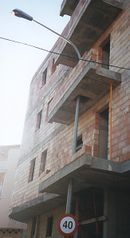

Farola
 De: La Frikipedia, la enciclopedia extremadamente seria.
De: La Frikipedia, la enciclopedia extremadamente seria.
Desde el principio de los tiempos, el ser humano ha tenido la necesidad imperiosa, ya sea de noche, o en algún recoveco inhóspito y desconocido donde no llega la luz del Sol de hacer hijos como locos alumbrarse. ¿Que por qué? La respuesta es obvia (y si aún no la sabes una de dos, o de pequeño te caíste y te diste un golpe importante en la cabeza o francamente hay que ser un poco corto): ¡porque sin luz no podían ver!
Orígenes
Farológo realizando un estudio sobre la calidad de las bombillas.
Después de esta sencilla aclaración (la cual a mí también me llevó mi buen esfuerzo y tiempo, no creáis)sería interesante echar un vistazo a los orígenes de este realmente deslumbrante artilugio al que nosotros llamamos farola. Y es aquí donde llegamos a un punto de inflexión y desacuerdo entre los más reputados expertos en el campo de la farología (en efecto, esa famosa rama de la ciencia que acabo de inventarme, y que sólamente los iluminados por el destino pueden estudiar). Actualmente existen tres teorías en las que se intenta explicar del modo más veraz posible el origen de este enigmático ser, a saber:
- La farola, al igual que todo ser u objeto inerte con luz propia y no más de siete patas, ha sido creada por Dios. Los seguidores y profesantes de esta secta son llamados de manera muy correcta
idiotas personas de valores y buena fe. Sostienen que la Primera Farola fue creada a partir de la vigésimoquinta costilla de Adán. Esto se dice que sucedió en una noche de borrachera, en la que Dios no veía un pijo por la calle y necesitaba luz para poder regresar a su palacio de la Luna humilde morada.
- Son ya más numerosos los farólogos que sostienen que las farolas vinieron a este nuestro planeta en una nave extraterrestre procedente del planeta Neptruño allá por el día 13 del mes 13 del año 1313 a eso de las 13:13 h. Se dice que huyeron de su planeta natal al verse allí poco aprovisionadas de bombillas y por lo tanto al filo de la oscura muerte farolil. Desde entonces conviven con los humanos así como con los monos más inteligentes en una relación simbiótica en la que nos dan luz a cambio de las preciadas bombillas terrestres. Desde hace tiempo esta teoría ha intentado ser ocultada por Los Illuminati que, según dice mi abuela y sus amigas de su equipo de rugby, los componentes de esa organización son los descendientes de aquellas primeras farolas que llegaron aquí en aquella nave en busca del Sueño Terrícola. Por lo tantom deducimos que nuestro planeta está controlado por las farolas. Según todo esto, las farolas siguen emitiendo luz en nuestro provecho como tapadera, ya que en realidad sus focos son potentes rayos láser. Su próximo objetivo se cree que es dominar a la raza humana y vendernos en el extranjero como Trabajadores Sin Salario, también llamados T.S.T. o esclavos.
- Sólo unos pocos son los que creen que las farolas fueron ideadas e inventadas por el hombre con el único propósito de tener luz, algo que simplemente resulta inverosímil. Se dice que las farolas eran al principio simples palos con fuego en uno en un extremo y de sujección manual. Obviamente se cogía el palo por el lado que no tenía fuego, aunque siempre había gente con su propia técnica . Más adelante el empleo del aceite y otros combustibles permitió que las farolas fuesen evolucionando a la par que el hombre hasta acabar siendo esos gigantes flacuchos de cabezas de cristal que podemos ver
y que ellas también nos ven a nosotros en las calles y pueblos de todo el mundo (en efecto, ya han puesto iluminación pública en la Antártida).
El otro gran beneficiario de la farola (las farolas son su urinario predilecto)
Datos varios sobre las farolas
Utilidades
Algunas de ellas son: iluminar de noche, iluminar de día, parar delicadamente a los ciclistas, ser el blanco de las piedras de todo niño, hacer que los semáforos no se sientan ni tan estúpidos ni tan solos, sujetar borrachos, son los urinarios públicos de todo buen perro, ser destruídas en GTA San Andreas al ser atropelladas por un boggie a 2,27 kmh/h, iluminar de noche, servir de atrezzo en la película en la que un tipo muy raro canta "singing in the rain", electrocutar escaladores urbanos, estropearse siempre que se pueda y servir de parking a motos, bicicletas, triciclos o triciclos motorizados.
¿Sabías que...
 Las farolas son una gran ayuda para construir balcones
- ...Probablemente no seas una farola?
- ...Si lo eres debes recordar que jamás he dicho nada malo de ti?
- ...Hay una farola detrás de ti observándote?
- ...Si has mirado detrás de ti te he conseguido engañar?
- ...Si realmente hay una farola detrás de ti morirás al acabar de leer esta frase?
- ...Si lames una farola en invierno te quedas pegado a ella?
- ...Si lames una farola en cualquier época del año eres idiota?
- ...Por mucho que lo intentes nunca podrás derribar una farola a cabezazos?
- ...El cementerio está lleno de farolas inocentes?
- ...Una de las atrocidades bélicas de Hitler, que sin embargo no figura en los libros de Historia, fue exterminar a todas las farolas judías?
- ...Uno de los mayores destinos turísticos de Burkina Faso es la estatua a la farola caída en combate, situada en su capital, Uagadugú?
- ...Tú nunca has estado allí?
- ...Realmente, Jesús fue crucificado en una farola?
- ..."Ojos que no ven, ostión contra la farola"?
Autor(es):
- Dark temptation
- Ricardoxxxlo
- 62666
- Bayo13
- The Nawal
- Gerri
- Petakuu
- Generibot
- Th´albert
Frikipedia 2005-2016, Licencia
GFDL 1.2 - Extraído por FrikiLeaks